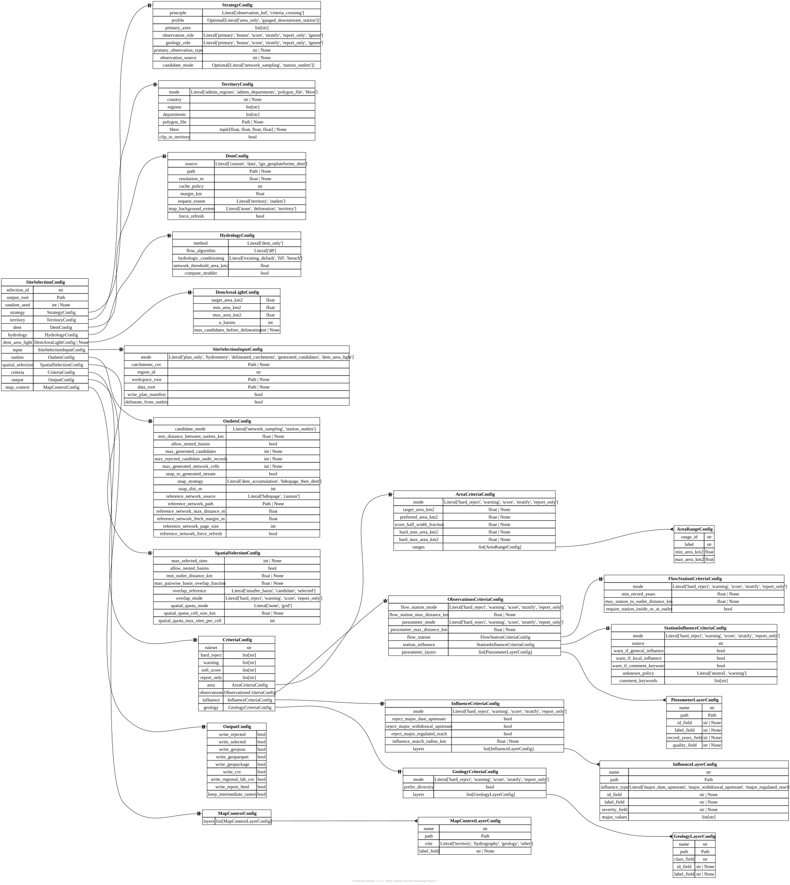

[site_selection] SiteSelectionConfig#
TOML section: [site_selection]
Pydantic model: SiteSelectionConfig defined in hydromodpy.spatial.site_selection.config.models.
Top-level site-selection workflow configuration.
Fields#
random_seed
int | None default = None user source
Optional seed used by stochastic candidate thinning.
strategy
in TOML:
[site_selection.strategy]
StrategyConfig factory user source
Fields of StrategyConfig
principle
str default = “criteria_crossing” user source
Selection principle: observation-led or direct criteria crossing.
"observation_led"Builds candidates from imported observation outlets, such as flow stations.
"criteria_crossing"Crosses the declared spatial and physical criteria directly, with no observation-led outlets.
profile
Optional[str] default = None user source
Optional selection profile. Short-term supported profiles are ‘area_only’ and ‘gauged_downstream_station’.
One of: "area_only" "gauged_downstream_station"
primary_axes
list[str] factory user source
Physical or spatial axes that drive a criteria_crossing selection.
observation_role
str default = “report_only” user source
How observations influence a criteria_crossing campaign.
"primary"Accepted and recorded in the manifest; no code reads it, so a run is unchanged.
"bonus"Accepted and recorded in the manifest; no code reads it, so a run is unchanged.
"score"Accepted and recorded in the manifest; no code reads it, so a run is unchanged.
"stratify"Accepted and recorded in the manifest; no code reads it, so a run is unchanged.
"report_only"Recorded but never read; one of the two values profile=’area_only’ accepts.
"ignore"Recorded but never read; the other value profile=’area_only’ accepts.
geology_role
str default = “report_only” user source
How geology influences a criteria_crossing campaign.
"primary"Accepted and recorded in the manifest; no code reads it, so a run is unchanged.
"bonus"Accepted and recorded in the manifest; no code reads it, so a run is unchanged.
"score"Accepted and recorded in the manifest; no code reads it, so a run is unchanged.
"stratify"Accepted and recorded in the manifest; no code reads it, so a run is unchanged.
"report_only"Recorded but never read; one of the two values profile=’area_only’ accepts.
"ignore"Recorded but never read; the other value profile=’area_only’ accepts.
primary_observation_type
str | None default = None user source
Observation family required by an observation_led strategy.
observation_source
str | None default = None user source
Provider or normalized source used for primary observations.
candidate_mode
Optional[str] default = None user source
Optional strategy-level candidate generation mode.
"network_sampling"Generates candidate outlets by sampling the DEM-derived stream network.
"station_outlets"Uses imported observation station locations, such as flow stations, as candidate outlets.
territory
in TOML:
[site_selection.territory]
TerritoryConfig required user source
Territory where candidate basins are searched.
Fields of TerritoryConfig
mode
str default = “bbox” user source
Territory resolver mode.
"admin_regions"Bounds the territory to the bounding box of the named administrative regions.
"admin_departments"Bounds the territory to the bounding box of the named departments.
"polygon_file"Bounds the territory to the bounding box of a user-supplied polygon file.
"bbox"Bounds the territory to an explicit xmin, ymin, xmax, ymax box.
departments
list[str] factory user source
Administrative departments used when mode=’admin_departments’.
polygon_file
Path | None default = None user source
User polygon file used when mode=’polygon_file’.
bbox
tuple[float, float, float, float] | None default = None user source
Territory bounds as xmin, ymin, xmax, ymax.
clip_to_territory
bool default = True user source
Clip candidate basins or outlets to the requested territory.
dem
in TOML:
[site_selection.dem]
DemConfig factory user source
Fields of DemConfig
source
str default = “custom” user source
DEM source identifier: custom path, data section, or ign_geoplateforme_dem.
One of: "custom" "data" "ign_geoplateforme_dem"
request_extent
str default = “territory” user source
Spatial extent used when a DEM is loaded through [data.dem]. ‘territory’ requests the configured selection territory; ‘outlets’ requests the bounding box of imported outlets expanded by margin_km.
One of: "territory" "outlets"
map_background_extent
str default = “delineation” user source
DEM extent used only for review-map background. ‘delineation’ reuses the DEM used to calculate basin contours; ‘territory’ loads a regional DEM through [data.dem] without using it for delineation.
"none"Skips loading any DEM background for the review map.
"delineation"Reuses the DEM already used to delineate basin contours as background.
"territory"Loads a separate regional DEM over the full territory for the background.
force_refresh
bool default = False user source
Ignore existing cached data when supported by the provider.
hydrology
in TOML:
[site_selection.hydrology]
HydrologyConfig factory user source
Fields of HydrologyConfig
flow_algorithm
Literal[‘d8’] default = “d8” user source
Flow routing algorithm used by existing spatial products.
hydrologic_conditioning
str default = “existing_default” user source
DEM conditioning strategy forwarded to existing flow products.
"existing_default"Forwards ‘fill’ to the flow products; it is the site-selection default.
"fill"Raises each depression to its spill elevation before routing flow.
"breach"Carves a channel through each depression, preserving natural flow paths.
network_threshold_area_km2
float default = 1.0 user source
Contributing-area threshold used to extract the stream network.
compute_strahler
bool default = True user source
Request Strahler diagnostics if existing spatial primitives support them.
dem_area_light
in TOML:
[site_selection.dem_area_light]
DemAreaLightConfig | None default = None user source
Compact settings for DEM-only automatic small-basin selection.
Fields of DemAreaLightConfig
target_area_km2
float default = 100.0 user source
Preferred upstream basin area for DEM-only candidate outlets.
n_basins
int default = 50 user source
Target number of basins selected by the greedy light workflow.
max_candidates_before_delineation
int | None default = None user source
Optional cap on DEM-area outlet candidates delineated before final selection. Lower values make examples faster but can leave fewer accepted basins after spatial filtering.
input
in TOML:
[site_selection.input]
SiteSelectionInputConfig factory user source
Fields of SiteSelectionInputConfig
mode
str default = “plan_only” user source
Explicit workflow input mode.
"plan_only"Writes the selection-plan manifest and report, loading no data and delineating nothing.
"hydrometry"Loads flow stations through HydroModPy data managers, then delineates their catchments.
"delineated_catchments"Reuses pre-delineated catchments and outlets supplied as catchments_csv.
"generated_candidates"Samples high-accumulation DEM/network cells to generate candidate outlets.
"dem_area_light"Generates DEM-only candidate outlets around a target upstream drainage area.
catchments_csv
Path | None default = None user source
Pre-delineated catchments CSV used when mode=’delineated_catchments’.
region_id
str default = “” user source
Optional region identifier written to regional-lab CSV outputs.
workspace_root
Path | None default = None user source
Optional workspace root forwarded to data-manager based loading.
data_root
Path | None default = None user source
Optional data root forwarded to data-manager based loading.
write_plan_manifest
bool default = True user source
Write site_selection_plan.json when the workflow is run in plan mode.
delineate_from_outlets
bool default = False user source
When using catchments_csv, compute watershed contours from outlet coordinates and DEM flow products instead of trusting watershed_shp.
outlets
in TOML:
[site_selection.outlets]
OutletsConfig factory user source
Fields of OutletsConfig
candidate_mode
str default = “network_sampling” user source
How candidate outlets are generated.
"network_sampling"Generates candidate outlets by sampling the DEM-derived stream network.
"station_outlets"Uses imported observation station locations, such as flow stations, as candidate outlets.
min_distance_between_outlets_km
float | None default = None user source
Minimum distance between generated outlets.
allow_nested_basins
bool default = False user source
Allow nested candidate basins before final selection.
max_generated_candidates
int | None default = 200 user source
Maximum number of DEM/network-generated candidates to delineate.
max_rejected_candidate_audit_records
int | None default = 5000 user source
Maximum number of rejected DEM/network candidate cells written to the candidate-generation audit JSONL.
max_generated_network_cells
int | None default = 50000 user source
Maximum number of DEM-derived stream cells exported to the generated network vector layer. Highest-accumulation cells are kept first.
snap_to_generated_stream
bool default = True user source
Snap outlets to the DEM-derived stream network when applicable.
snap_strategy
str default = “dem_accumulation” user source
Outlet snapping strategy. ‘dem_accumulation’ snaps directly on the DEM-derived accumulation raster. ‘bdtopage_then_dem’ first projects the station to BD Topage, then snaps locally on the DEM raster.
One of: "dem_accumulation" "bdtopage_then_dem"
snap_dist_m
int default = 150 user source
Maximum snapping distance in metres for outlet-based delineation.
reference_network_source
str default = “bdtopage” user source
Reference hydrographic network used by bdtopage_then_dem.
"bdtopage"Downloads the reference stream network from the BD Topage WFS service.
"custom"Uses the local vector file at reference_network_path as the reference network.
reference_network_path
Path | None default = None user source
Local vector network used when reference_network_source=’custom’.
reference_network_max_distance_m
float default = 100.0 user source
Maximum accepted distance from candidate outlet to the reference network.
reference_network_fetch_margin_m
float default = 500.0 user source
Extra margin around outlets when downloading a BD Topage reference network.
reference_network_page_size
int default = 2000 dev source
BD Topage WFS page size used for the reference network download.
reference_network_force_refresh
bool default = False dev source
Redownload BD Topage even if the run output already contains a network file.
spatial_selection
in TOML:
[site_selection.spatial_selection]
SpatialSelectionConfig factory user source
Fields of SpatialSelectionConfig
max_selected_sites
int | None default = None user source
Maximum number of catchments kept after ranking and spatial thinning.
min_outlet_distance_km
float | None default = None user source
Minimum spacing between selected outlets.
max_pairwise_basin_overlap_fraction
float | None default = None user source
Maximum allowed overlap fraction between selected basins.
overlap_reference
str default = “smaller_basin” user source
Denominator used for overlap fraction.
"smaller_basin"Divides the intersection area by the area of the smaller of the two basins.
"candidate"Divides the intersection area by the candidate basin’s own area.
"selected"Divides the intersection area by the already-selected basin’s own area.
overlap_mode
str default = “hard_reject” user source
How overlap violations affect selection.
"hard_reject"Rejects a candidate whose basin overlap exceeds the configured threshold.
"warning"Flags excess basin overlap as a warning without rejecting the candidate.
"score"Behaves like warning here: flags excess overlap without computing a score.
"report_only"Behaves like warning here: flags excess overlap rather than only recording it.
spatial_quota_mode
str default = “none” user source
Optional coarse spatial quota applied after ranking.
"none"Applies no spatial quota; ranking alone decides which sites are kept.
"grid"Rejects extra candidates once a grid cell already holds its site quota.
spatial_quota_cell_size_km
float | None default = None user source
Grid cell size used when spatial_quota_mode=’grid’.
spatial_quota_max_sites_per_cell
int default = 1 user source
Maximum selected sites allowed in one spatial quota cell.
criteria
in TOML:
[site_selection.criteria]
CriteriaConfig factory user source
Fields of CriteriaConfig
ruleset
str default = “site_selection_v1” user source
hard_reject
list[str] factory user source
warning
list[str] factory user source
soft_score
list[str] factory user source
report_only
list[str] factory user source
area
in TOML:
[site_selection.criteria.area]
AreaCriteriaConfig factory user source
Fields of AreaCriteriaConfig
mode
str default = “report_only” user source
How basin area contributes to selection.
"hard_reject"Rejects candidates that fail the configured basin area check.
"warning"Flags candidates that fail the configured basin area check, without rejecting them.
"score"Scores candidates by closeness of their area to preferred_area_km2.
"stratify"Makes basin area available for grouping candidates into strata.
"report_only"Records basin area evidence without any automatic accept or reject decision.
target_area_km2
float | None default = None user source
Named target area used for reporting or strict area profiles.
preferred_area_km2
float | None default = None user source
Preferred area used by score-based campaigns.
score_half_width_fraction
float | None default = None user source
Relative half-width of the area score around preferred_area_km2.
ranges
in TOML:
[[site_selection.criteria.area.ranges]]
list[AreaRangeConfig] factory user source
Explicit area ranges used for hard rejection, warnings or stratification. Prefer this over target/preferred area fields when the campaign is defined by minimum and maximum basin sizes.
Fields of AreaRangeConfig
observations
in TOML:
[site_selection.criteria.observations]
ObservationsCriteriaConfig factory user source
Fields of ObservationsCriteriaConfig
flow_station_mode
str default = “report_only” user source
"hard_reject"Rejects candidates that fail the configured flow-station check.
"warning"Flags candidates that fail the configured flow-station check, without rejecting them.
"score"Scores candidates by record length and station-to-outlet distance.
"stratify"Makes flow-station available for grouping candidates into strata.
"report_only"Records flow-station evidence without any automatic accept or reject decision.
flow_station_max_distance_km
float | None default = None user source
piezometer_mode
str default = “report_only” user source
"hard_reject"Rejects candidates that fail the configured piezometer check.
"warning"Flags candidates that fail the configured piezometer check, without rejecting them.
"score"Scores candidates by distance to the nearest piezometer, or piezometer count.
"stratify"Makes piezometer available for grouping candidates into strata.
"report_only"Records piezometer evidence without any automatic accept or reject decision.
piezometer_max_distance_km
float | None default = None user source
flow_station
in TOML:
[site_selection.criteria.observations.flow_station]
FlowStationCriteriaConfig factory user source
Fields of FlowStationCriteriaConfig
mode
str default = “report_only” user source
"hard_reject"Rejects candidates that fail the configured flow-station check.
"warning"Flags candidates that fail the configured flow-station check, without rejecting them.
"score"Scores candidates by record length and station-to-outlet distance.
"stratify"Makes flow-station available for grouping candidates into strata.
"report_only"Records flow-station evidence without any automatic accept or reject decision.
min_record_years
float | None default = None user source
max_station_to_outlet_distance_km
float | None default = None user source
require_station_inside_or_at_outlet
bool default = False user source
station_influence
in TOML:
[site_selection.criteria.observations.station_influence]
StationInfluenceCriteriaConfig factory user source
Fields of StationInfluenceCriteriaConfig
mode
str default = “report_only” user source
"hard_reject"Rejects candidates that fail the configured station-influence check.
"warning"Flags candidates that fail the configured station-influence check, without rejecting them.
"score"Scores candidates by influence status: 1.0 if none, 0.5 if unknown, 0.0 if influenced.
"stratify"Makes station-influence available for grouping candidates into strata.
"report_only"Records station-influence evidence without any automatic accept or reject decision.
source
str default = “hubeau_station_metadata” user source
warn_if_general_influence
bool default = True user source
warn_if_local_influence
bool default = True user source
warn_if_comment_keyword
bool default = True user source
Report comment keyword matches as warnings. Comment keywords are not treated as hard-reject evidence.
unknown_policy
str default = “neutral” user source
"neutral"Does not raise a warning when station influence metadata is missing or unknown.
"warning"Raises a warning when station influence metadata is missing or unknown.
piezometer_layers
in TOML:
[[site_selection.criteria.observations.piezometer_layers]]
list[PiezometerLayerConfig] factory user source
Optional vector layers used to compute piezometer evidence.
influence
in TOML:
[site_selection.criteria.influence]
InfluenceCriteriaConfig factory user source
Fields of InfluenceCriteriaConfig
mode
str default = “report_only” user source
"hard_reject"Rejects a candidate when a configured influence rejection flag is present.
"warning"Flags a configured influence flag as a warning without rejecting the candidate.
"score"Behaves like warning here: flags influence without computing a score.
"stratify"Behaves like warning here: flags influence without grouping by class.
"report_only"Records influence evidence without any automatic accept or reject decision.
reject_major_dam_upstream
bool default = False user source
reject_major_withdrawal_upstream
bool default = False user source
reject_major_regulated_reach
bool default = False user source
influence_search_radius_km
float | None default = None user source
layers
in TOML:
[[site_selection.criteria.influence.layers]]
list[InfluenceLayerConfig] factory user source
Optional vector layers used to compute influence flags automatically.
Fields of InfluenceLayerConfig
influence_type
str required user source
Normalized influence flag filled when features match a basin.
"major_dam_upstream"Marks matching basins as having a major dam upstream of the outlet.
"major_withdrawal_upstream"Marks matching basins as having a major water withdrawal upstream.
"major_regulated_reach"Marks matching basins as having a major regulated reach upstream.
severity_field
str | None default = None user source
Optional field used to classify major features.
major_values
list[str] factory user source
Values considered major in severity_field. When empty, every matched feature is considered major.
geology
in TOML:
[site_selection.criteria.geology]
GeologyCriteriaConfig factory user source
Fields of GeologyCriteriaConfig
mode
str default = “report_only” user source
"hard_reject"Behaves like report_only here: geology cannot yet reject a candidate.
"warning"Behaves like report_only here: geology cannot yet raise a warning.
"score"Gives a full score when a geology class is found, none otherwise.
"stratify"Makes the geology class available for grouping candidates into strata.
"report_only"Records geology evidence without any automatic accept or reject decision.
prefer_diversity
bool default = False user source
layers
in TOML:
[[site_selection.criteria.geology.layers]]
list[GeologyLayerConfig] factory user source
Optional polygon layers used to compute geology evidence.
Fields of GeologyLayerConfig
output
in TOML:
[site_selection.output]
OutputConfig factory user source
Fields of OutputConfig
write_rejected
bool default = True user source
write_selected
bool default = True user source
write_geojson
bool default = True user source
write_geoparquet
bool default = False user source
write_geopackage
bool default = False user source
write_csv
bool default = True user source
write_regional_lab_csv
bool default = True user source
write_report_html
bool default = False user source
keep_intermediate_rasters
bool default = False user source
Keep intermediate GeoTIFF rasters such as flow products and per-candidate watershed masks after final outputs are written.
map_context
in TOML:
[site_selection.map_context]
MapContextConfig factory user source
Fields of MapContextConfig
layers
in TOML:
[[site_selection.map_context.layers]]
list[MapContextLayerConfig] factory user source
Context vector layers drawn behind selection artifacts.
Fields of MapContextLayerConfig
role
str default = “other” user source
Visual role controlling the default map style.
"territory"Drawn as a dashed grey outline, styled as the territory boundary.
"hydrography"Drawn as thin blue lines, styled as the stream network.
"geology"Drawn as pale yellow polygons, styled as geology units.
"other"Drawn as neutral grey polygons and lines with no special role.
label_field
str | None default = None user source
Optional feature-property field used for future labels.
Starter TOML snippet#
Click to expand a copy-pasteable [site_selection] TOML skeleton
Copy this block into your project.toml and uncomment the lines
you want to set. Sub-tables ([parent.subfield]) appear in the
order Pydantic expects them.
[site_selection]
# selection_id = "" # REQUIRED
# output_root = "" # REQUIRED
# random_seed = ... # default = None
[site_selection.strategy]
# principle = "criteria_crossing"
# profile = ... # default = None
# primary_axes = ... # factory default
# observation_role = "report_only"
# geology_role = "report_only"
# primary_observation_type = ... # default = None
# observation_source = ... # default = None
# candidate_mode = ... # default = None
[site_selection.territory]
# mode = "bbox"
# country = ... # default = None
# regions = ... # factory default
# departments = ... # factory default
# polygon_file = ... # default = None
# bbox = ... # default = None
# clip_to_territory = true
[site_selection.dem]
# source = "custom"
# path = ... # default = None
# resolution_m = ... # default = None
# cache_policy = "use_cache_else_download"
# margin_km = 0.0
# request_extent = "territory"
# map_background_extent = "delineation"
# force_refresh = false
[site_selection.hydrology]
# method = "dem_only"
# flow_algorithm = "d8"
# hydrologic_conditioning = "existing_default"
# network_threshold_area_km2 = 1.0
# compute_strahler = true
[site_selection.dem_area_light]
# target_area_km2 = 100.0
# min_area_km2 = 75.0
# max_area_km2 = 125.0
# n_basins = 50
# max_candidates_before_delineation = ... # default = None
[site_selection.input]
# mode = "plan_only"
# catchments_csv = ... # default = None
# region_id = ""
# workspace_root = ... # default = None
# data_root = ... # default = None
# write_plan_manifest = true
# delineate_from_outlets = false
[site_selection.outlets]
# candidate_mode = "network_sampling"
# min_distance_between_outlets_km = ... # default = None
# allow_nested_basins = false
# max_generated_candidates = 200
# max_rejected_candidate_audit_records = 5000
# max_generated_network_cells = 50000
# snap_to_generated_stream = true
# snap_strategy = "dem_accumulation"
# snap_dist_m = 150
# reference_network_source = "bdtopage"
# reference_network_path = ... # default = None
# reference_network_max_distance_m = 100.0
# reference_network_fetch_margin_m = 500.0
[site_selection.spatial_selection]
# max_selected_sites = ... # default = None
# allow_nested_basins = false
# min_outlet_distance_km = ... # default = None
# max_pairwise_basin_overlap_fraction = ... # default = None
# overlap_reference = "smaller_basin"
# overlap_mode = "hard_reject"
# spatial_quota_mode = "none"
# spatial_quota_cell_size_km = ... # default = None
# spatial_quota_max_sites_per_cell = 1
[site_selection.criteria]
# ruleset = "site_selection_v1"
# hard_reject = ... # factory default
# warning = ... # factory default
# soft_score = ... # factory default
# report_only = ... # factory default
# area = ... # factory default
# observations = ... # factory default
# influence = ... # factory default
# geology = ... # factory default
[site_selection.output]
# write_rejected = true
# write_selected = true
# write_geojson = true
# write_geoparquet = false
# write_geopackage = false
# write_csv = true
# write_regional_lab_csv = true
# write_report_html = false
# keep_intermediate_rasters = false
[site_selection.map_context]
# layers = ... # factory default
Entity-relationship diagram#
{kind=link}

Click to zoom and pan. Press Esc or click outside to close.